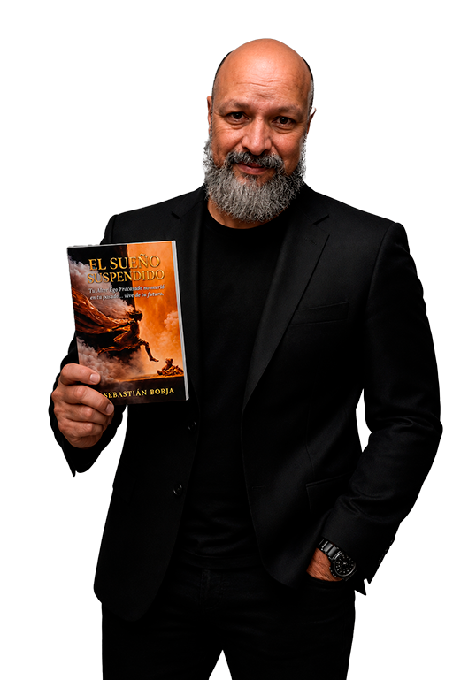

Hubo una vez una persona destinada al fracaso.
No porque no pudiera. Sino porque alguien decidió que su máximo era ocho.
Se esforzó día tras día. Alcanzó carreras, trabajos, posesiones.
Pero siempre era un ocho. Nunca su diez.
Murió siendo cero coma cinco.
No porque no pudiera más. Sino porque dejó de decidir que podía.
¿En dónde estás vos?
¿Cuál es tu máximo?
¿Cuándo dejaste de soñar?
¿Cuándo dejaste de buscar?
¿Por qué decidiste que ya no podías?
¿Quién puso esa voz dentro tuyo?
Esa es la respuesta exacta que aparece cuando el dolor es tocado.
Se encierra. Los muros no permiten entrar.
Si no estás listo aún, es entendible.
Pero si dentro de vos hay algo que te dice que hay algo más...
Es la actitud exacta que tiene la herida del pasado.
No se involucra. Para no sentir. Para no volver a ser lastimado.
Si estoy equivocado, ya no estás leyendo esto.
Pero si leíste esta frase es porque en el fondo decidiste que no es porque podés.
Es porque elegís.
Hay una versión tuya que se formó en el momento más doloroso de tu vida. Aprendió a protegerte. Construyó un castillo. Y desde ahí lleva años tomando decisiones por vos.
Lo llamamos el Alter Ego Fracasado.
No es tu enemigo. Es tu guardián. Pero ya no lo necesitás.
El tiempo pasa.
Y los cambios siguen sin aparecer.
Pero si seguiste leyendo hasta aquí, es porque muy dentro tuyo hay algo que sabe que hay otro lado en la puerta que estás viendo frente tuyo.
Esa puerta es tuya. Y puede ser atravesada.
Tu decisión te trajo hasta acá. Pero el AEF todavía vive adentro. Para salir del ciclo no alcanza con querer salir. Hay que entrar al castillo y sanar lo que quedó ahí.
¿Querés saber cómo?
Después.
Esa palabra le pertenece al AEF.
Pero vos ya estás afuera. Ya diste el primer paso.
Y dentro tuyo algo sabe que el único momento que existe
es este.
No te diste cuenta.
Igual que en tu vida.
El tiempo pasa. El ciclo sigue. Y el sueño espera.
La única forma de sanar al AEF es detenerse un momento y sanar esa herida profunda. En este libro encontrás la técnica exacta para hacer ese trabajo y salir de esa situación para siempre.
Pero todo depende exclusiva y puramente de vos.
Decidir no saber no es ignorancia.
Es ocultamiento.
Si estoy equivocado, ya no estás leyendo esto.
Pero si leés esta palabra es porque algo dentro tuyo
está gritando por un cambio.
Se trata de elecciones. De compromiso. Este compromiso no lo asumís pagando un libro — lo asumís cuando encarnás el verdadero vos que ya quiere salir, que ya quiere dejarse ver.
La vida que estabas esperando no está lejos. Está frente a tus ojos. La ves todos los días. La sentís cerca. Pero algo en vos la mira desde afuera, como si vos fueras el testigo de tu propia historia, y no su protagonista.

Pasé años acompañando personas que lo tenían todo para avanzar y no podían. Construí este sistema porque lo viví. Porque conozco esa voz que cuida y paraliza al mismo tiempo.
"No soy el ejemplo. Soy la posibilidad."
No te vamos a guiar. El camino lo designás vos.